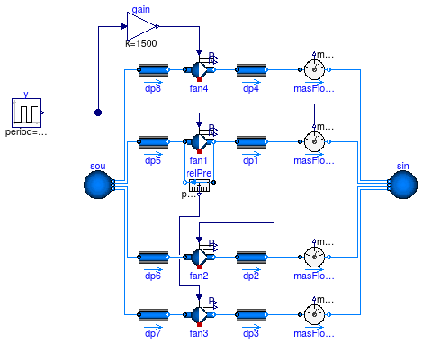
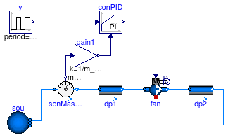
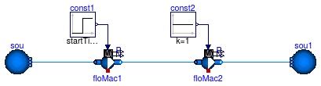
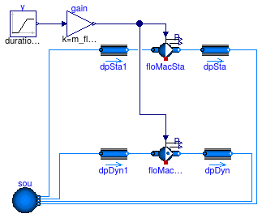

Collection of models that illustrate model use and test models
Information
This package contains examples for the use of models that can be found in
Buildings.Obsolete.Fluid.Movers.
Extends from Modelica.Icons.ExamplesPackage (Icon for packages containing runnable examples).
Package Content
Fans with different control signals as input

Information
This example demonstrates the use of the flow model with four different configurations.
At steady-state, all flow models have the same mass flow rate and pressure difference.
Note that addPowerToMedium=false since otherwise,
Dymola computes the enthalpy change of the component as a fraction (k*m_flow+P_internal)/m_flow
which leads to an error because of 0/0 at zero flow rate.
Extends from Modelica.Icons.Example (Icon for runnable examples), Buildings.Obsolete.Fluid.Movers.Examples.BaseClasses.ControlledFlowMachine.
Modelica definition
Fans with different control signals as input and a dynamic speed signal

Information
This example demonstrates the use of the flow model with four different configurations.
At steady-state, all flow models have the same mass flow rate and pressure difference.
Extends from Modelica.Icons.Example (Icon for runnable examples), Buildings.Obsolete.Fluid.Movers.Examples.BaseClasses.ControlledFlowMachine.
Modelica definition
model ControlledFlowMachineDynamic
"Fans with different control signals as input and a dynamic speed signal"
extends Modelica.Icons.Example;
extends Buildings.Obsolete.Fluid.Movers.Examples.BaseClasses.ControlledFlowMachine
(
fan4(dynamicBalance=true, energyDynamics=Modelica.Fluid.Types.Dynamics.FixedInitial),
fan1(dynamicBalance=true, energyDynamics=Modelica.Fluid.Types.Dynamics.FixedInitial),
fan2(dynamicBalance=true, energyDynamics=Modelica.Fluid.Types.Dynamics.FixedInitial),
fan3(dynamicBalance=true, energyDynamics=Modelica.Fluid.Types.Dynamics.FixedInitial));
end ControlledFlowMachineDynamic;
Fan with polynomial performance curve

Information
Extends from Modelica.Icons.Example (Icon for runnable examples).
Modelica definition
model FlowMachine
"Fan with polynomial performance curve"
extends Modelica.Icons.Example;
package Medium =
Buildings.Media.Air;
Modelica.Blocks.Sources.Ramp P(
height=-1500,
offset=101325,
duration=1.5);
Buildings.Obsolete.Fluid.Movers.FlowMachinePolynomial fan(
D=0.6858,
a={4.2904,-1.387,4.2293,-3.92920,0.8534},
b={0.1162,1.5404,-1.4825,0.7664,-0.1971},
mNorMin_flow=1,
mNorMax_flow=2,
redeclare package Medium = Medium,
m_flow_nominal=10);
Modelica.Blocks.Sources.Constant N(k=22.3333);
Buildings.Fluid.Sources.Boundary_pT sou(
redeclare package Medium
= Medium,
use_p_in=true,
T=293.15,
nPorts=1);
Buildings.Fluid.Sources.Boundary_pT sin(
redeclare package Medium
= Medium,
use_p_in=true,
T=293.15,
nPorts=1);
Modelica.Blocks.Sources.Constant PAtm(k=101325);
Buildings.Utilities.Reports.Printer printer(
nin=6,
header="time dp dpNorm mNorm m_flow power",
samplePeriod=0.1);
Modelica.Blocks.Sources.RealExpression fan_mFlow(y=fan.m_flow);
Modelica.Blocks.Sources.RealExpression modTim2(y=time);
Modelica.Blocks.Sources.RealExpression fan_dp(y=fan.dp);
Modelica.Blocks.Sources.RealExpression fan_dpNor(y=fan.pNor);
Modelica.Blocks.Sources.RealExpression fan_mNor(y=fan.mNor_flow);
Modelica.Blocks.Sources.RealExpression fan_PSha(y=fan.PSha);
Buildings.Fluid.Sensors.TemperatureTwoPort
TIn(
redeclare package Medium = Medium,
m_flow_nominal=10);
Buildings.Fluid.Sensors.TemperatureTwoPort
TOut(
redeclare package Medium = Medium,
m_flow_nominal=10);
equation
connect(modTim2.y, printer.x[1]);
connect(fan_dp.y, printer.x[2]);
connect(fan_dpNor.y, printer.x[3]);
connect(fan_mNor.y, printer.x[4]);
connect(fan_PSha.y, printer.x[6]);
connect(fan_mFlow.y, printer.x[5]);
connect(N.y, fan.N_in);
connect(P.y, sou.p_in);
connect(PAtm.y, sin.p_in);
connect(sou.ports[1], TIn.port_a);
connect(TIn.port_b, fan.port_a);
connect(fan.port_b, TOut.port_a);
connect(TOut.port_b, sin.ports[1]);
end FlowMachine;
Flow machine with feedback control

Information
This example demonstrates the use of a fan with closed loop control.
The fan is controlled to track a required mass flow rate.
Extends from Modelica.Icons.Example (Icon for runnable examples).
Parameters
| Type | Name | Default | Description |
|---|
| MassFlowRate | m_flow_nominal | 0.1 | Nominal mass flow rate [kg/s] |
| Pressure | dp_nominal | 500 | Nominal pressure difference [Pa] |
Modelica definition
model FlowMachineFeedbackControl
"Flow machine with feedback control"
extends Modelica.Icons.Example;
package Medium =
Buildings.Media.Air;
parameter Modelica.SIunits.MassFlowRate m_flow_nominal= 0.1
"Nominal mass flow rate";
parameter Modelica.SIunits.Pressure dp_nominal = 500
"Nominal pressure difference";
Modelica.Blocks.Sources.Pulse y(
offset=0.25,
startTime=0,
amplitude=0.5,
period=15*60)
"Input signal";
Buildings.Fluid.Sources.Boundary_pT sou(
redeclare package Medium = Medium,
use_p_in=false,
p=101325,
T=293.15,
nPorts=2);
Buildings.Fluid.FixedResistances.FixedResistanceDpM dp1(
redeclare package Medium = Medium,
m_flow_nominal=m_flow_nominal,
dp_nominal=dp_nominal/2)
"Pressure drop";
Buildings.Fluid.FixedResistances.FixedResistanceDpM dp2(
redeclare package Medium = Medium,
m_flow_nominal=m_flow_nominal,
dp_nominal=dp_nominal/2)
"Pressure drop";
Buildings.Obsolete.Fluid.Movers.FlowMachine_y fan(
redeclare package Medium = Medium,
pressure(V_flow={0,m_flow_nominal,2*m_flow_nominal}/1.2,
dp={2*dp_nominal,dp_nominal,0}),
energyDynamics=Modelica.Fluid.Types.Dynamics.FixedInitial)
"Fan";
Buildings.Fluid.Sensors.MassFlowRate senMasFlo(
redeclare package Medium =
Medium);
Buildings.Controls.Continuous.LimPID conPID(
Td=1,
controllerType=Modelica.Blocks.Types.SimpleController.PI,
k=0.5,
Ti=15);
Modelica.Blocks.Math.Gain gain1(k=1/m_flow_nominal);
equation
connect(sou.ports[1], senMasFlo.port_a);
connect(senMasFlo.port_b, dp1.port_a);
connect(dp1.port_b, fan.port_a);
connect(fan.port_b, dp2.port_a);
connect(dp2.port_b, sou.ports[2]);
connect(senMasFlo.m_flow, gain1.u);
connect(gain1.y, conPID.u_m);
connect(y.y, conPID.u_s);
connect(conPID.y, fan.y);
end FlowMachineFeedbackControl;
Two flow machines in parallel

Information
This example tests the configuration of two flow machines that are installed in parallel.
Both flow machines start with full speed.
At t=150 second, the speed of the flow machine on the top is reduced to zero.
As its speed is reduced, the mass flow rate changes its direction in such a way that the flow machine
at the top has reverse flow.
Extends from Modelica.Icons.Example (Icon for runnable examples).
Parameters
| Type | Name | Default | Description |
|---|
| MassFlowRate | m_flow_nominal | 1 | Nominal mass flow rate [kg/s] |
| Density | rho_nominal | 1.2 | Density, used to compute fluid mass [kg/m3] |
Modelica definition
model FlowMachineParallel_y
"Two flow machines in parallel"
extends Modelica.Icons.Example;
package Medium =
Buildings.Media.Air "Medium model";
parameter Modelica.SIunits.MassFlowRate m_flow_nominal=
1
"Nominal mass flow rate";
Buildings.Fluid.FixedResistances.FixedResistanceDpM dpIn1(
redeclare package Medium = Medium,
dp_nominal=1000,
m_flow_nominal=0.5*m_flow_nominal)
"Pressure drop";
Buildings.Obsolete.Fluid.Movers.FlowMachine_y floMac1(
redeclare package Medium = Medium,
pressure(V_flow={0, m_flow_nominal/rho_nominal}, dp={2*4*1000, 0}),
energyDynamics=Modelica.Fluid.Types.Dynamics.FixedInitial)
"Model of a flow machine";
Buildings.Fluid.FixedResistances.FixedResistanceDpM dpOut1(
redeclare package Medium = Medium,
dp_nominal=1000,
m_flow_nominal=0.5*m_flow_nominal)
"Pressure drop";
Buildings.Fluid.Sources.Boundary_pT sou(
redeclare package Medium = Medium,
use_p_in=false,
nPorts=2,
T=293.15);
Buildings.Fluid.FixedResistances.FixedResistanceDpM dpIn(
redeclare package Medium = Medium,
m_flow_nominal=m_flow_nominal,
dp_nominal=1000)
"Pressure drop";
Buildings.Fluid.FixedResistances.FixedResistanceDpM dpOut3(
redeclare package Medium = Medium,
m_flow_nominal=m_flow_nominal,
dp_nominal=1000)
"Pressure drop";
Modelica.Blocks.Sources.Constant const2(k=1)
"Constant source";
parameter Modelica.SIunits.Density rho_nominal=1.2
"Density, used to compute fluid mass";
Buildings.Fluid.FixedResistances.FixedResistanceDpM dpIn2(
redeclare package Medium = Medium,
dp_nominal=1000,
m_flow_nominal=0.5*m_flow_nominal)
"Pressure drop";
Buildings.Obsolete.Fluid.Movers.FlowMachine_y floMac2(
redeclare package Medium = Medium,
pressure(V_flow={0, m_flow_nominal/rho_nominal}, dp={2*4*1000, 0}),
energyDynamics=Modelica.Fluid.Types.Dynamics.FixedInitial)
"Model of a flow machine";
Buildings.Fluid.FixedResistances.FixedResistanceDpM dpOut2(
redeclare package Medium = Medium,
dp_nominal=1000,
m_flow_nominal=0.5*m_flow_nominal)
"Pressure drop";
Modelica.Blocks.Sources.Step const1(
height=-1,
offset=1,
startTime=150);
equation
connect(dpIn1.port_b, floMac1.port_a);
connect(floMac1.port_b, dpOut1.port_a);
connect(sou.ports[1], dpIn.port_a);
connect(dpIn.port_b, dpIn1.port_a);
connect(dpOut1.port_b, dpOut3.port_a);
connect(dpOut3.port_b, sou.ports[2]);
connect(dpIn2.port_b,floMac2. port_a);
connect(floMac2.port_b,dpOut2. port_a);
connect(const2.y, floMac2.y);
connect(dpIn.port_b, dpIn2.port_a);
connect(dpOut2.port_b, dpOut3.port_a);
connect(const1.y, floMac1.y);
end FlowMachineParallel_y;
Two flow machines in series

Information
This example tests the configuration of two flow machines that are installed in series.
Both flow machines start with full speed.
At t=150 seconds, the speed of the flow machine on the left is reduced to zero.
As its speed is reduced, the mass flow rate is reduced. Note that even at zero input, the mass flow rate is non-zero,
but the pressure drop of the pump floMac1.dp is positive, which means that this pump has a flow resistance.
However, flowMac2.dp is always negative, as this pump has a constant control input of 1.
Extends from Modelica.Icons.Example (Icon for runnable examples).
Parameters
| Type | Name | Default | Description |
|---|
| MassFlowRate | m_flow_nominal | 1 | Nominal mass flow rate [kg/s] |
| ThermodynamicState | state_start | Medium.setState_pTX(T=Medium... | Start state |
| Density | rho_nominal | Medium.density(state_start) | Density, used to compute fluid mass [kg/m3] |
Modelica definition
model FlowMachineSeries_y
"Two flow machines in series"
extends Modelica.Icons.Example;
package Medium =
Buildings.Media.Water;
parameter Modelica.SIunits.MassFlowRate m_flow_nominal=
1
"Nominal mass flow rate";
Buildings.Obsolete.Fluid.Movers.FlowMachine_y floMac1(
redeclare package Medium = Medium,
pressure(V_flow={0, m_flow_nominal/1000}, dp={2*4*1000, 0}),
dynamicBalance=false)
"Model of a flow machine";
Buildings.Fluid.Sources.Boundary_pT sou(
redeclare package Medium = Medium,
use_p_in=false,
p(displayUnit="Pa") = 300000,
T=293.15,
nPorts=1);
Modelica.Blocks.Sources.Constant const2(k=1);
parameter Medium.ThermodynamicState state_start =
Medium.setState_pTX(
T=Medium.T_default,
p=Medium.p_default,
X=Medium.X_default)
"Start state";
parameter Modelica.SIunits.Density rho_nominal=
Medium.density(
state_start)
"Density, used to compute fluid mass";
Buildings.Obsolete.Fluid.Movers.FlowMachine_y floMac2(
redeclare package Medium = Medium,
pressure(V_flow={0, m_flow_nominal/1000}, dp={2*4*1000, 0}),
dynamicBalance=false)
"Model of a flow machine";
Modelica.Blocks.Sources.Step const1(
height=-1,
offset=1,
startTime=150);
Buildings.Fluid.Sources.Boundary_pT sou1(
redeclare package Medium = Medium,
use_p_in=false,
p(displayUnit="Pa") = 300000 + 4000,
T=293.15,
nPorts=1);
equation
connect(const2.y, floMac2.y);
connect(const1.y, floMac1.y);
connect(floMac1.port_b, floMac2.port_a);
connect(sou.ports[1], floMac1.port_a);
connect(floMac2.port_b, sou1.ports[1]);
end FlowMachineSeries_y;
Fan with zero mass flow rate and speed as input
Information
This example demonstrates and tests the use of a flow machine whose mass flow rate is reduced to zero.
The fans have been configured as steady-state models.
This ensures that the actual speed is equal to the input signal.
Extends from Modelica.Icons.Example (Icon for runnable examples), Buildings.Obsolete.Fluid.Movers.Examples.BaseClasses.FlowMachine_ZeroFlow (Base class to test flow machines with zero flow rate).
Parameters
| Type | Name | Default | Description |
|---|
| MassFlowRate | m_flow_nominal | 1 | Nominal mass flow rate [kg/s] |
| Pressure | dp_nominal | 500 | Nominal pressure difference [Pa] |
Modelica definition
model FlowMachine_Nrpm
"Fan with zero mass flow rate and speed as input"
extends Modelica.Icons.Example;
extends Buildings.Obsolete.Fluid.Movers.Examples.BaseClasses.FlowMachine_ZeroFlow
(
gain(k=1500),
redeclare Buildings.Obsolete.Fluid.Movers.FlowMachine_Nrpm floMacSta(
redeclare package Medium = Medium,
pressure(V_flow={0,m_flow_nominal,2*m_flow_nominal}/1.2,
dp={2*dp_nominal,dp_nominal,0}),
filteredSpeed=false,
energyDynamics=Modelica.Fluid.Types.Dynamics.FixedInitial),
redeclare Buildings.Obsolete.Fluid.Movers.FlowMachine_Nrpm floMacDyn(
redeclare package Medium = Medium,
pressure(V_flow={0,m_flow_nominal,2*m_flow_nominal}/1.2,
dp={2*dp_nominal,dp_nominal,0}),
filteredSpeed=false,
energyDynamics=Modelica.Fluid.Types.Dynamics.FixedInitial));
equation
connect(gain.y, floMacSta.Nrpm);
connect(gain.y, floMacDyn.Nrpm);
end FlowMachine_Nrpm;
Fan with zero mass flow rate and head as input

Information
This example demonstrates and tests the use of a flow machine whose mass flow rate is reduced to zero.
The fans have been configured as steady-state models.
This ensures that the actual speed is equal to the input signal.
Extends from Modelica.Icons.Example (Icon for runnable examples), Buildings.Obsolete.Fluid.Movers.Examples.BaseClasses.FlowMachine_ZeroFlow (Base class to test flow machines with zero flow rate).
Parameters
| Type | Name | Default | Description |
|---|
| MassFlowRate | m_flow_nominal | 1 | Nominal mass flow rate [kg/s] |
| Pressure | dp_nominal | 500 | Nominal pressure difference [Pa] |
Modelica definition
model FlowMachine_dp
"Fan with zero mass flow rate and head as input"
extends Modelica.Icons.Example;
extends Buildings.Obsolete.Fluid.Movers.Examples.BaseClasses.FlowMachine_ZeroFlow
(
gain(k=dp_nominal),
redeclare Buildings.Obsolete.Fluid.Movers.FlowMachine_dp floMacSta(
redeclare package Medium = Medium,
m_flow_nominal=m_flow_nominal,
filteredSpeed=false,
energyDynamics=Modelica.Fluid.Types.Dynamics.FixedInitial),
redeclare Buildings.Obsolete.Fluid.Movers.FlowMachine_dp floMacDyn(
redeclare package Medium = Medium,
m_flow_nominal=m_flow_nominal,
filteredSpeed=false,
energyDynamics=Modelica.Fluid.Types.Dynamics.FixedInitial));
equation
connect(gain.y, floMacSta.dp_in);
connect(gain.y, floMacDyn.dp_in);
end FlowMachine_dp;
Fan with zero mass flow rate and mass flow rate as input

Information
This example demonstrates and tests the use of a flow machine whose mass flow rate is reduced to zero.
The fans have been configured as steady-state models.
This ensures that the actual speed is equal to the input signal.
Extends from Modelica.Icons.Example (Icon for runnable examples), Buildings.Obsolete.Fluid.Movers.Examples.BaseClasses.FlowMachine_ZeroFlow (Base class to test flow machines with zero flow rate).
Parameters
| Type | Name | Default | Description |
|---|
| MassFlowRate | m_flow_nominal | 1 | Nominal mass flow rate [kg/s] |
| Pressure | dp_nominal | 500 | Nominal pressure difference [Pa] |
Modelica definition
model FlowMachine_m_flow
"Fan with zero mass flow rate and mass flow rate as input"
extends Modelica.Icons.Example;
extends Buildings.Obsolete.Fluid.Movers.Examples.BaseClasses.FlowMachine_ZeroFlow
(
gain(k=m_flow_nominal),
redeclare Buildings.Obsolete.Fluid.Movers.FlowMachine_m_flow floMacSta(
redeclare package Medium = Medium,
m_flow_nominal=m_flow_nominal,
filteredSpeed=false,
energyDynamics=Modelica.Fluid.Types.Dynamics.FixedInitial),
redeclare Buildings.Obsolete.Fluid.Movers.FlowMachine_m_flow floMacDyn(
redeclare package Medium = Medium,
m_flow_nominal=m_flow_nominal,
filteredSpeed=false,
energyDynamics=Modelica.Fluid.Types.Dynamics.FixedInitial));
equation
connect(gain.y, floMacSta.m_flow_in);
connect(gain.y, floMacDyn.m_flow_in);
end FlowMachine_m_flow;
Fan with zero mass flow rate and control signal y as input

Information
This example demonstrates and tests the use of a flow machine whose mass flow rate is reduced to zero.
The fans have been configured as steady-state models.
This ensures that the actual speed is equal to the input signal.
Extends from Modelica.Icons.Example (Icon for runnable examples), Buildings.Obsolete.Fluid.Movers.Examples.BaseClasses.FlowMachine_ZeroFlow (Base class to test flow machines with zero flow rate).
Parameters
| Type | Name | Default | Description |
|---|
| MassFlowRate | m_flow_nominal | 1 | Nominal mass flow rate [kg/s] |
| Pressure | dp_nominal | 500 | Nominal pressure difference [Pa] |
Modelica definition
model FlowMachine_y
"Fan with zero mass flow rate and control signal y as input"
extends Modelica.Icons.Example;
extends Buildings.Obsolete.Fluid.Movers.Examples.BaseClasses.FlowMachine_ZeroFlow
(
gain(k=1),
redeclare Buildings.Obsolete.Fluid.Movers.FlowMachine_y floMacSta(
redeclare package Medium = Medium,
pressure(V_flow={0,m_flow_nominal,2*m_flow_nominal}/1.2,
dp={2*dp_nominal,dp_nominal,0}),
filteredSpeed=false,
energyDynamics=Modelica.Fluid.Types.Dynamics.FixedInitial),
redeclare Buildings.Obsolete.Fluid.Movers.FlowMachine_y floMacDyn(
redeclare package Medium = Medium,
pressure(V_flow={0,m_flow_nominal,2*m_flow_nominal}/1.2,
dp={2*dp_nominal,dp_nominal,0}),
filteredSpeed=false,
energyDynamics=Modelica.Fluid.Types.Dynamics.FixedInitial));
equation
connect(gain.y, floMacDyn.y);
connect(gain.y, floMacSta.y);
end FlowMachine_y;
Pump with linear characteristic for pressure vs. flow rate

Information
This example demonstrates and tests the use of a flow machine whose speed is reduced to zero.
In the top model, the pressure drop across the pump is constant, and in the bottom model,
the mass flow rate across the pump is constant.
In the top model, a small flow resistance has been added since a pump with zero speed cannot
produce a non-zero pressure raise. For this operating region, the pressure drop ensures that
the model is non-singular.
The fans have been configured as steady-state models.
This ensures that the actual speed is equal to the input signal.
Extends from Modelica.Icons.Example (Icon for runnable examples).
Parameters
| Type | Name | Default | Description |
|---|
| MassFlowRate | m_flow_nominal | 0.5 | Nominal mass flow rate [kg/s] |
| Pressure | dp_nominal | 10000 | Nominal pressure [Pa] |
Modelica definition
model FlowMachine_y_linear
"Pump with linear characteristic for pressure vs. flow rate"
extends Modelica.Icons.Example;
package Medium =
Buildings.Media.Water "Medium model";
parameter Modelica.SIunits.MassFlowRate m_flow_nominal = 0.5
"Nominal mass flow rate";
parameter Modelica.SIunits.Pressure dp_nominal = 10000
"Nominal pressure";
Modelica.Blocks.Sources.Ramp y(
offset=1,
duration=0.5,
startTime=0.25,
height=-1)
"Input signal";
Buildings.Fluid.Sources.Boundary_pT sou(
redeclare package Medium = Medium,
use_p_in=false,
p=300000,
T=293.15,
nPorts=1);
Buildings.Obsolete.Fluid.Movers.FlowMachine_y pumFixDp(
redeclare package Medium = Medium,
energyDynamics=Modelica.Fluid.Types.Dynamics.SteadyState,
dynamicBalance=false,
pressure(V_flow=2/1000*{0, m_flow_nominal}, dp={2*dp_nominal, 0}),
filteredSpeed=false)
"Pump with fixed pressure raise";
Buildings.Fluid.Sources.Boundary_pT sou1(
redeclare package Medium = Medium,
use_p_in=false,
p(displayUnit="Pa") = 300000 + 0.01*dp_nominal,
T=293.15,
nPorts=1);
Buildings.Fluid.FixedResistances.FixedResistanceDpM dp1(
redeclare package Medium = Medium,
m_flow_nominal=m_flow_nominal,
dp_nominal=0.01*dp_nominal)
"Pressure drop";
Buildings.Fluid.Sources.MassFlowSource_T
sou2(
redeclare package Medium = Medium,
nPorts=1,
m_flow=m_flow_nominal*0.01,
T=293.15);
Buildings.Obsolete.Fluid.Movers.FlowMachine_y pumFixM_flow(
redeclare package Medium = Medium,
energyDynamics=Modelica.Fluid.Types.Dynamics.SteadyState,
dynamicBalance=false,
pressure(V_flow=2/1000*{0, m_flow_nominal}, dp={2*dp_nominal, 0}),
filteredSpeed=false)
"Pump with fixed mass flow rate";
Buildings.Fluid.Sources.Boundary_pT sou3(
redeclare package Medium = Medium,
use_p_in=false,
p(displayUnit="Pa") = 300000 + 0.01*dp_nominal,
T=293.15,
nPorts=1);
equation
connect(pumFixDp.port_b, sou1.ports[1]);
connect(dp1.port_b, pumFixDp.port_a);
connect(dp1.port_a, sou.ports[1]);
connect(pumFixM_flow.port_b, sou3.ports[1]);
connect(sou2.ports[1], pumFixM_flow.port_a);
connect(y.y, pumFixDp.y);
connect(y.y, pumFixM_flow.y);
end FlowMachine_y_linear;
Pumps that illustrates the use of the pump curves

Information
This example demonstrates how the pump curves changes for different (constant) input
signal y.
If y ≥ delta = 0.05, the pump curves are polynomials.
For y < delta = 0.05, the pump curves convert to linear functions to
avoid a singularity at the origin.
Extends from Modelica.Icons.Example (Icon for runnable examples).
Parameters
| Type | Name | Default | Description |
|---|
| MassFlowRate | m_flow_nominal | 0.5 | Nominal mass flow rate [kg/s] |
| Pressure | dp_nominal | 10000 | Nominal pressure [Pa] |
Modelica definition
model FlowMachine_y_pumpCurves
"Pumps that illustrates the use of the pump curves"
extends Modelica.Icons.Example;
package Medium =
Buildings.Media.Water "Medium model";
parameter Modelica.SIunits.MassFlowRate m_flow_nominal = 0.5
"Nominal mass flow rate";
parameter Modelica.SIunits.Pressure dp_nominal = 10000
"Nominal pressure";
model pumpModel =
Buildings.Obsolete.Fluid.Movers.FlowMachine_y (
redeclare package Medium = Medium,
energyDynamics=Modelica.Fluid.Types.Dynamics.SteadyState,
dynamicBalance=false,
pressure(V_flow=2/1000*m_flow_nominal*{0.2, 0.4, 0.6, 0.8},
dp=dp_nominal*{0.9, 0.85, 0.6, 0.2}))
"Declaration of pump model";
pumpModel pum(filteredSpeed=false)
"Pump";
pumpModel pum1(filteredSpeed=false)
"Pump";
pumpModel pum2(filteredSpeed=false)
"Pump";
pumpModel pum3(filteredSpeed=false)
"Pump";
Modelica.Blocks.Sources.Ramp y(
offset=1,
duration=0.5,
startTime=0.25,
height=-1)
"Input signal";
Buildings.Fluid.Sources.Boundary_pT sou(
redeclare package Medium = Medium,
use_p_in=false,
p=300000,
T=293.15,
nPorts=4);
Buildings.Fluid.Sources.Boundary_pT sou1(
redeclare package Medium = Medium,
use_p_in=false,
nPorts=4,
p(displayUnit="Pa") = 300000,
T=293.15);
Buildings.Fluid.Actuators.Valves.TwoWayLinear dp1(
redeclare package Medium = Medium,
m_flow_nominal=m_flow_nominal,
dpValve_nominal=0.01*dp_nominal,
filteredOpening=false)
"Pressure drop";
Modelica.Blocks.Sources.Constant
y1(k=1)
"Input signal";
Buildings.Fluid.Actuators.Valves.TwoWayLinear dp2(
redeclare package Medium = Medium,
m_flow_nominal=m_flow_nominal,
dpValve_nominal=0.01*dp_nominal,
filteredOpening=false)
"Pressure drop";
Modelica.Blocks.Sources.Constant
y2(k=0.5)
"Input signal";
Buildings.Fluid.Actuators.Valves.TwoWayLinear dp3(
redeclare package Medium = Medium,
m_flow_nominal=m_flow_nominal,
dpValve_nominal=0.01*dp_nominal,
filteredOpening=false)
"Pressure drop";
Modelica.Blocks.Sources.Constant
y3(k=0.05)
"Input signal";
Buildings.Fluid.Actuators.Valves.TwoWayLinear dp4(
redeclare package Medium = Medium,
m_flow_nominal=m_flow_nominal,
dpValve_nominal=0.01*dp_nominal,
filteredOpening=false)
"Pressure drop";
Modelica.Blocks.Sources.Constant
y4(k=0.01)
"Input signal";
equation
connect(dp1.port_b, pum.port_a);
connect(dp1.port_a, sou.ports[1]);
connect(y1.y, pum.y);
connect(y.y, dp1.y);
connect(dp2.port_b, pum1.port_a);
connect(y.y,dp2. y);
connect(sou.ports[2], dp2.port_a);
connect(y2.y, pum1.y);
connect(dp3.port_b, pum2.port_a);
connect(y.y,dp3. y);
connect(y3.y, pum2.y);
connect(dp3.port_a, sou.ports[3]);
connect(dp4.port_b, pum3.port_a);
connect(y.y,dp4. y);
connect(y4.y, pum3.y);
connect(dp4.port_a, sou.ports[4]);
connect(pum3.port_b, sou1.ports[1]);
connect(pum2.port_b, sou1.ports[2]);
connect(pum1.port_b, sou1.ports[3]);
connect(pum.port_b, sou1.ports[4]);
end FlowMachine_y_pumpCurves;
Declaration of pump model

Parameters
| Type | Name | Default | Description |
|---|
| replaceable package Medium | PartialMedium | Medium in the component |
| Boolean | addPowerToMedium | true | Set to false to avoid any power (=heat and flow work) being added to medium (may give simpler equations) |
| Characteristics |
| Boolean | use_powerCharacteristic | false | Use powerCharacteristic (vs. efficiencyCharacteristic) |
| Boolean | motorCooledByFluid | true | If true, then motor heat is added to fluid stream |
| efficiencyParameters | motorEfficiency | | Normalized volume flow rate vs. efficiency |
| efficiencyParameters | hydraulicEfficiency | | Normalized volume flow rate vs. efficiency |
| powerParameters | power | | Volume flow rate vs. electrical power consumption |
| Initialization |
| Real | r_V.start | 1 | Ratio V_flow/V_flow_max [1] |
| MassFlowRate | m_flow.start | 0 | Mass flow rate from port_a to port_b (m_flow > 0 is design flow direction) [kg/s] |
| Pressure | dp.start | 0 | Pressure difference between port_a and port_b [Pa] |
| Advanced |
| Boolean | homotopyInitialization | true | = true, use homotopy method |
| MassFlowRate | m_flow_small | 1E-4*abs(m_flow_nominal) | Small mass flow rate for regularization of zero flow [kg/s] |
| Diagnostics |
| Boolean | show_T | false | = true, if actual temperature at port is computed |
| Dynamics |
| Filtered speed |
| Boolean | filteredSpeed | true | = true, if speed is filtered with a 2nd order CriticalDamping filter |
| Time | riseTime | 30 | Rise time of the filter (time to reach 99.6 % of the speed) [s] |
| Init | init | Modelica.Blocks.Types.Init.I... | Type of initialization (no init/steady state/initial state/initial output) |
| Real | N_start | 0 | Initial value of speed |
| Equations |
| Dynamics | energyDynamics | Modelica.Fluid.Types.Dynamic... | Formulation of energy balance |
| Dynamics | massDynamics | energyDynamics | Formulation of mass balance |
| Boolean | dynamicBalance | false | Set to true to use a dynamic balance, which often leads to smaller systems of equations |
| Real | mSenFac | 1 | Factor for scaling the sensible thermal mass of the volume |
| Nominal condition |
| Time | tau | 1 | Time constant of fluid volume for nominal flow, used if dynamicBalance=true [s] |
| Initialization |
| AbsolutePressure | p_start | Medium.p_default | Start value of pressure [Pa] |
| Temperature | T_start | Medium.T_default | Start value of temperature [K] |
| MassFraction | X_start[Medium.nX] | Medium.X_default | Start value of mass fractions m_i/m [kg/kg] |
| ExtraProperty | C_start[Medium.nC] | fill(0, Medium.nC) | Start value of trace substances |
| ExtraProperty | C_nominal[Medium.nC] | fill(1E-2, Medium.nC) | Nominal value of trace substances. (Set to typical order of magnitude.) |
| Assumptions |
| Boolean | allowFlowReversal | true | = true to allow flow reversal, false restricts to design direction (port_a -> port_b) |
Connectors
| Type | Name | Description |
|---|
| output RealOutput | P | Electrical power consumed [W] |
| output RealOutput | N_actual | [1/min] |
| replaceable package Medium | Medium in the component |
| FluidPort_a | port_a | Fluid connector a (positive design flow direction is from port_a to port_b) |
| FluidPort_b | port_b | Fluid connector b (positive design flow direction is from port_a to port_b) |
| HeatPort_a | heatPort | Heat dissipation to environment |
| input RealInput | y | Constant normalized rotational speed [1] |
Modelica definition
model pumpModel =
Buildings.Obsolete.Fluid.Movers.FlowMachine_y (
redeclare package Medium = Medium,
energyDynamics=Modelica.Fluid.Types.Dynamics.SteadyState,
dynamicBalance=false,
pressure(V_flow=2/1000*m_flow_nominal*{0.2, 0.4, 0.6, 0.8},
dp=dp_nominal*{0.9, 0.85, 0.6, 0.2}))
"Declaration of pump model";
Automatically generated Mon Jul 13 14:36:27 2015.
 Buildings.Obsolete.Fluid.Movers.Examples.ControlledFlowMachine
Buildings.Obsolete.Fluid.Movers.Examples.ControlledFlowMachine